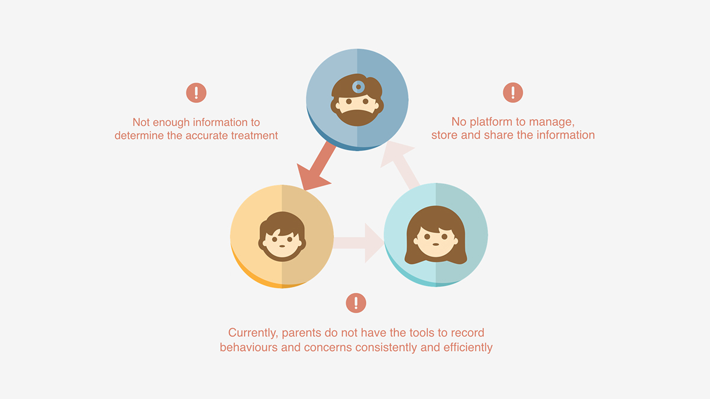
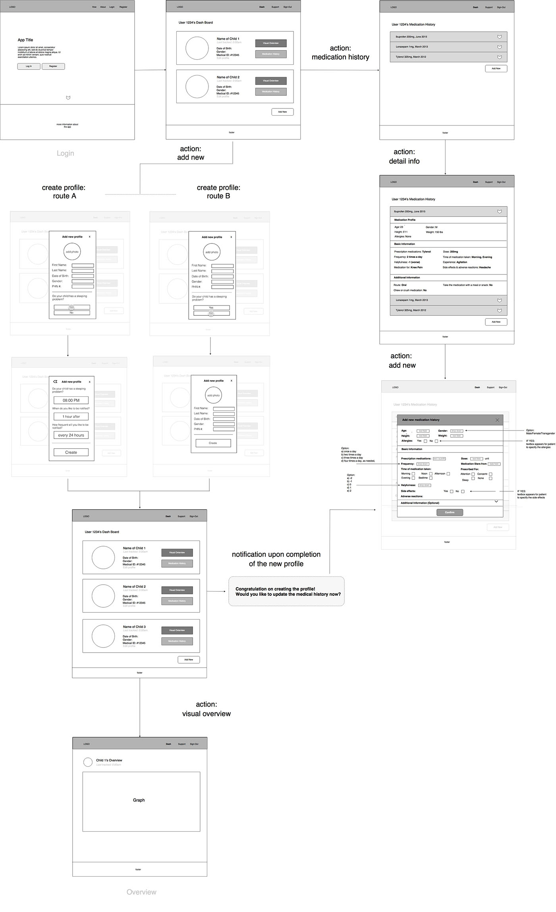
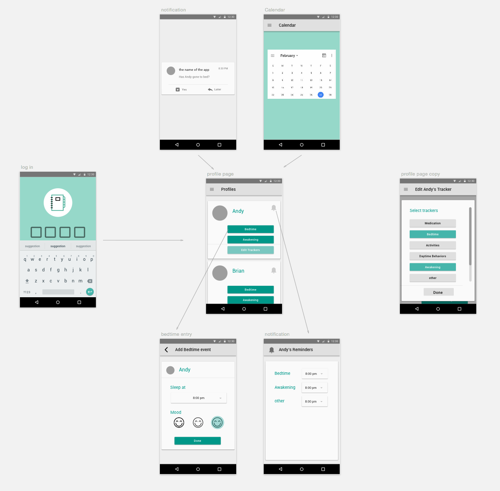
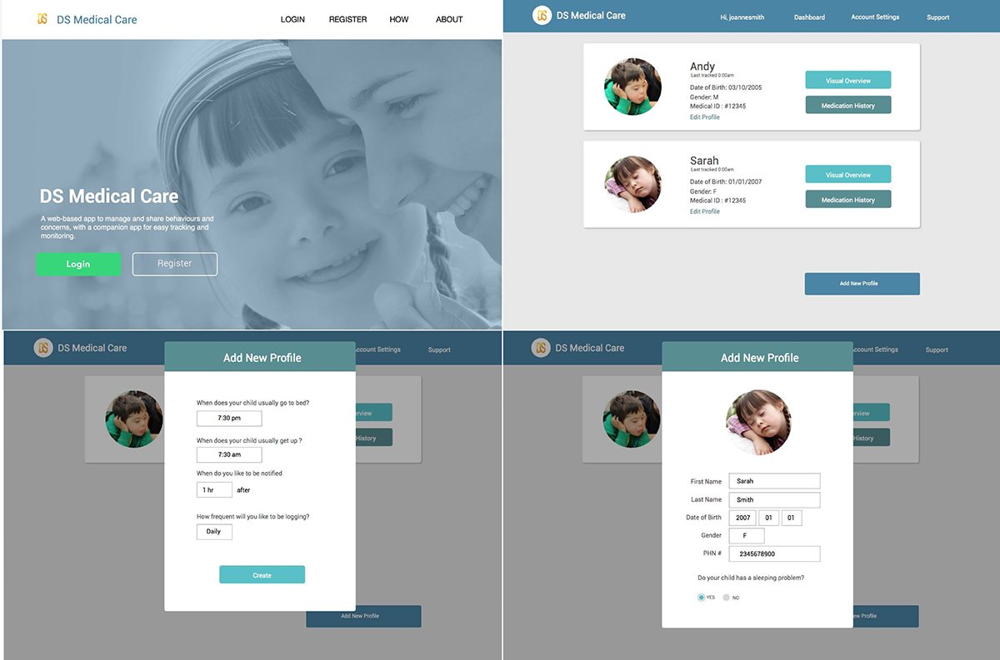
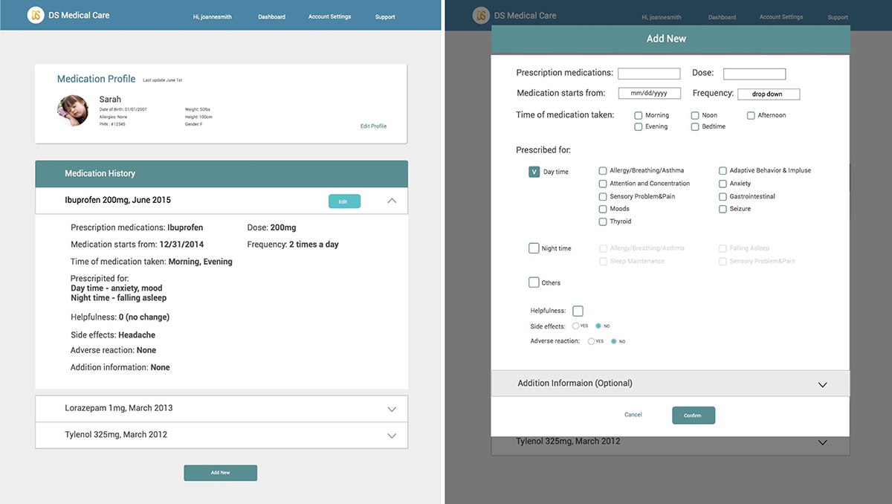
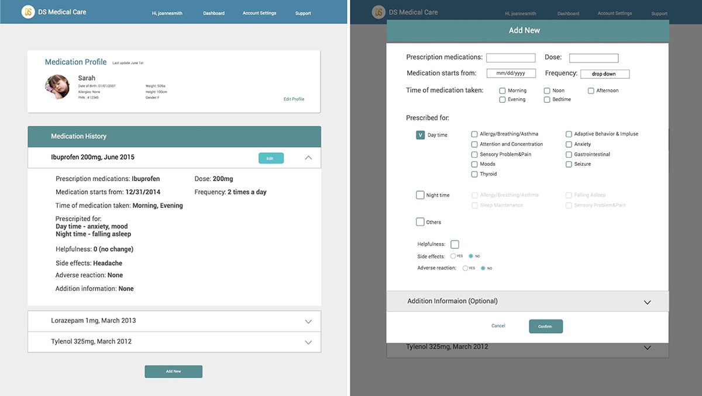

介紹
「唐氏症醫療照護」是 UBC 大學教授 Dr. Osman Ipsiroglu 對於兒童睡眠障礙（一個常見於唐氏症兒童的症狀）研究的一部份。 在進行研究時，醫生都會發放紙本表格讓家長回去填寫關於孩子一天的狀況，每天都要做紀錄。但事實上這麼做的效率很差。
在 醫生-病人-家屬 的三角關係裡，以往的做法由於紙本記錄效果不好，有以下缺陷：
在經過我們團隊跟教授還有家長作為 User group 的討論下，其目標如下
Wireframe 線框圖
桌上型電腦或平板檢視紀錄
手機快速紀錄每天狀態
Mockups 高擬真設計稿
 
